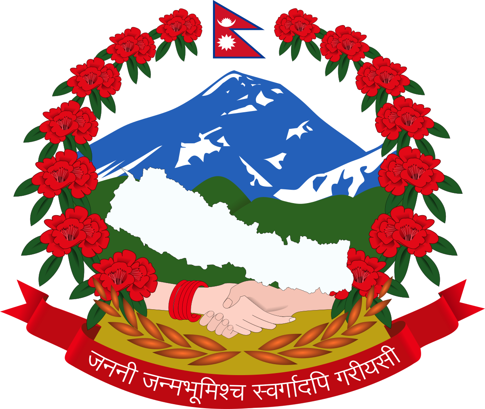
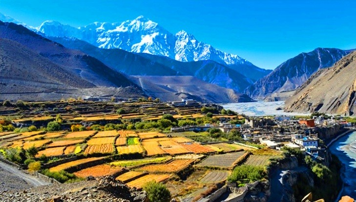

History of Nepal
Nepal is richly endowed with history and culture as a nation. The piece of land has a past that goes back to Neolithic times. The recorded antiquity, on the contrary, starts from as late as the Kirati dynasty around the 7th century BC according to Hindu scriptures and even archaeology. In the medieval ages, Nepal used to be conglomerate of many smaller kingdoms before King Prithvi Narayan Shah ascended into power and subsequently joined them together around the eighteenth century into what is now known as today state.
This time is important in a way and meaning it saved Nepal from falling into British sovereignty maintaining its independent nature at a point when other countries around it were colonized; it remained under the control of Shah dynasty until there was a national unrest that resulted into its being declared as Federal Democratic Republic with no king after Shah monarchs were abolished during that period of time which was ruled by civil war (the year when the civil war started
Welcome
Welcome to the "Beautiful Nepal" website, your gateway to exploring the natural splendor and rich culture of Nepal. Our homepage offers a captivating hero image that embodies the beauty of Nepal, accompanied by a brief introduction that highlights the unique aspects of the nation. Quickly access our featured sections on "About Nepal," "Activities," and "Travel Guide," each providing insights and detailed information with visually appealing images. Stay connected by subscribing to our newsletter and follow us on social media through the links provided, ensuring you're always updated on the latest adventures and cultural events that Nepal has to offer.